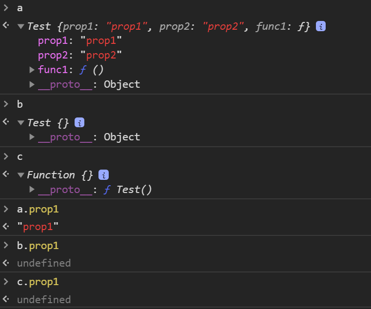
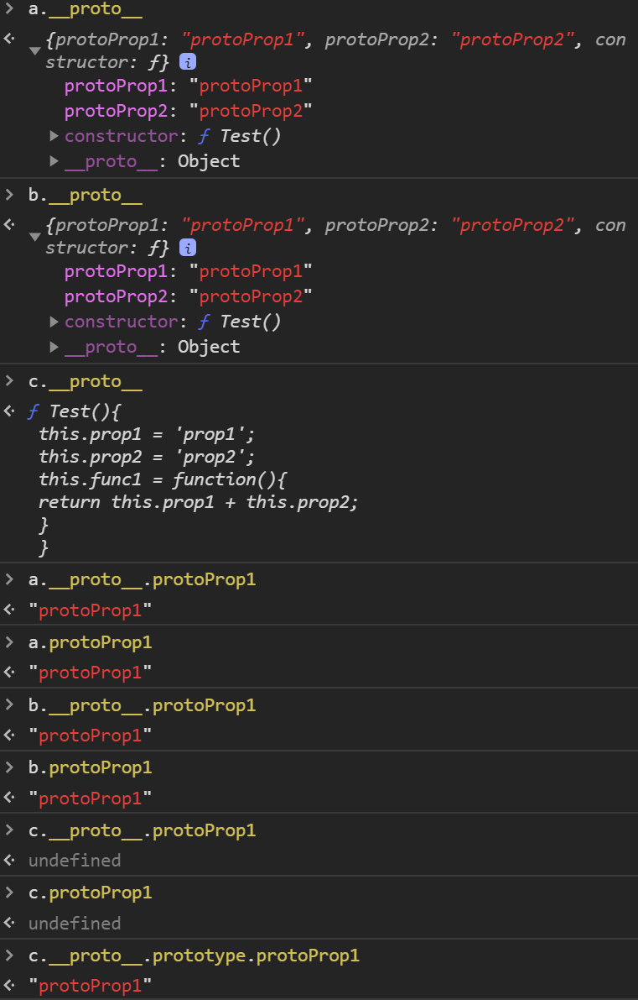

前言
物件導向程式設計（OOP）的基本概念是使用物件的方式來表示，透過類別（class）的函式建構式（function constructor）可以產生物件實例（object instance）。
JavaScript 並非真正的物件導向 (OO) 語言，它是一個以原型為基礎 (Prototype-based) 的語言。因為沒有 Class，而是透過 「原型」(prototype) 來實現繼承實作。
建構式
在 JavaScript 中，一個 Function 是不是建構式並不是取決於它的宣告方式，而是取決於它是不是用 new 來執行的。如果是用 new 執行一個 Function 時，我們就稱做這種呼叫為 建構式呼叫。當我們用建構式呼叫去執行一個 Function，這個 Function 就會被當作建構式。
使用 new 建構式呼叫的時候，實際上會有幾件事會被執行：
- 首先會新建出一個物件。
- 將物件的
.__proto__指向建構子的 prototype ，形成原型串鏈。 - 將建構子的 this 指向 new 出來的新物件。
- 回傳新建物件 ( 如果建構式本身沒有回傳東西的話 )。
先來看一下 function constructor 的實際應用，透過 function 的方式來建立一個新的物件，如果我們想要建立出同屬性名稱但不同屬性值的物件內容，我們可以把物件的屬性值變成參數，如此就能透過此 function constructor 建立出許多不同的物件：
1 | function Person(firstName, lastName, age) { |
name 跟 age 這兩個屬性在每一個 instance 都不一定會相同，而 log 這個 method 其實都在做同一件事情，而且還佔用了兩份空間。意思就是他們其實是兩個不同的 function 。
因為每一個 instance 彼此之間是可以共享方法的，所以我們可以透過把 log 這個 function 抽出來，指定在 Person.prototype 上面，這樣所有用 Person 建構出來的 instance 都可以共享這個方法，將可以有效減少記憶體占用的問題。
1 | function Person(firstName, lastName, age) { |
共用的屬性或方法，不用每次都幫實體建立一份，提出來放到 prototype 即可。
以下是嘗試存取屬性時會發生的事：
1 | // 利用含有 a 與 b 屬性的 f 函式，建立一個 o 物件： |
增加原生原型的屬性和方法
上面都是設定自己建立的物件原型，也能修改預設的原生原型，但不要不小心把原本內建的屬性或方法給無意間覆蓋掉。
例如在 Array.prototype 上面加上函式：
1 | Array.prototype.push("Cyting") |
在 Array.prototype 中 push 一段字串進去，接著新增 top 函式回傳字串內容；只要宣告出陣列型別的資料型態，都會有該字串內容，也都能呼叫 top 函式。
修改 Prototype 方法
我們可以修改某個 function constructor 的 prototype 內容，當改變了該函式建構式中 prototype 內的方法，那麼所有根據這個建構式所建立的實例（不管是修改 prototype 之前或之後所建立的實例），都會套用更新後的方法：
1 | function Person(firstName, lastName, age) { |
原型鏈 Prototype Chain
當物件試圖存取一個物件的屬性時，其不僅會尋找該物件，也會尋找該物件的原型、原型的原型……直到找到相符合的屬性，或是到達原型鏈的尾端。
所有的物件裡面都會包含原型（prototype）這個物件，在 JavaScript 中這個物件的名稱為 __proto__ 。如果在原本的物件中找不到指定的屬性名稱或方法時，就會進一步到 __proto__ 裡面來找。
以上面 var roman = new Person(‘Roman’,’Gonzalez’, 18); 為例，當呼叫 roman.log() 方法，因為 roman 這個 instance 本身並沒有 log 這個 function，而 roman 是 Person 的 instance，所以如果在 roman 本身找不到，就會嘗試從 Person.prototype 去找。
我們想要取得某個物件的原型物件時，就可以透過以下兩個方式：
1 | //可以使用 .__proto__ 來取得 [[Prototype]] |
roman 的 __proto__ 會指向 Person.prototype ，當發現 roman 沒有 log 這個 method 的時候，JavaScript 就會試著透過 __proto__ 找到 Person.prototype ，去看 Person.prototype 裡面有沒有 log 這個 method。
假如 Person.prototype 還是沒有呢？那就繼續依照這個規則，去看 Person.prototype.__proto__ 裡面有沒有 log 這個 method，就這樣一直不斷找下去。直到該物件的 __proto__ 為 null 為止，意思就是找到最上層了。
而上面這一條透過 __proto__ 不斷串起來的鍊，就稱為原型鍊。透過這一條原型鍊來呼叫自己 parent 的 method，讓 JavaScript 達到類似其他物件導向語言般的類別、繼承功能。
1 | // roman.__proto__ 會指向 Person.prototype |
hasOwnProperty
如果想知道一個屬性是存在 instance 身上，還是存在於它屬於的原型鍊當中，可以用 hasOwnProperty 這個方法：
1 | var roman = new Person('Roman','Gonzalez', 18); |
hasOwnProperty 只會檢查該物件，而不會檢查整條原型串鏈；可以透過迴圈來列出整個原型鏈且為可列舉的屬性；prop 是自訂的變數，會把該物件的屬性存在這個變數中，接著讀取下一個屬性，重覆直到沒有屬性為止，透過 for…in 把該物件中的所有屬性名稱和屬性值都列出來，列出的項目也包含被添加過的屬性或方法：
1 | for (var prop in roman) { |
instanceof
檢查物件是否為指定的建構子所建立的實體，位於 instanceof 左邊的運算元是物件，右邊的是函式，若左邊的物件是由右邊函式所產生的，則會回傳 true，否則為 false。
1 | roman instanceof Person // true |
A instanceof B 就是拿來判斷 A 是不是 B 的 instance 只要能在 A 的原型鍊裡面找到 B 的 prototype，就會回傳 true。
isPrototypeOf
與 instanceof 不同之處只在於運算元的資料型別不同而已，但功能是相同的。
1 | Person.prototype.isPrototypeOf(roman) // true |
如果 A.isPrototypeOf(B) 返回 true 則 B instanceof A 一定返回 true 。
Object.prototype
當我們嘗試在某個物件存取一個不存在該物件的屬性時，它會繼續往它的「原型物件」[[prototype]] 去尋找，直到找到 Object.prototype 才停止。
1 | // 這兩個互為彼此的 instance |
constructor
每一個 prototype 都會有一個有 constructor 屬性，而這個屬性會指向構造函數，例如 Person.prototype 的構造函數就是Person。
1 | function Person(firstName, lastName, age) { |
X.prototype.constructor === X ，將 X 用 Function, Person, Object 帶進去都會是 true。
Object.create() and new operator 差異
以下為使用 Object.create 方式：
1 | var dog = { |
執行流程如下：
- 建立一個 dog 物件。
- 使用 Object.create(dog) 將 將 maddie 的 [[Prototype]] 指向 dog 。
- 檢查 maddie 的 prototype 是不是 dog，回傳 true 。
- 設定 maddie 的 eatFood 屬性值。
- 呼叫 eat function。
- Javascript 透過 prototype chain 找到 eat method 。
以下為使用 new operator 方式：
1 | var Dog = function(){ |
執行流程如下：
建立一個 maddie 物件。
- 透過 function constructor 將 maddie 的 [[Prototype]] 指向 Dog 的 Prototype。
- 設定建構式中的 this 到物件。
- 回傳所建立的物件。
- 檢查 maddie 是不是 Dog 的 instance ，回傳 true 。
- 呼叫 eat function。
- Javascript 透過 prototype chain 找到 eat method 。
再看一個例子：
1 | function Dog(){ |
1 | console.log(buddy.pupper); //Output is undefined |
大家有注意到 buddy.pupper 是 undefined 嗎？即使 Object.create() 將 prototype 指定為 Dog ，但是 buddy 並沒有存取到建構式中的 this.pupper ，兩者之間的主要差別就是 new Dog 會執行建構式中的程式碼，而 object.create 並不會執行建構式裡面的內容。
以下為另一個範例：
1 | function Test(){ |
此範例比較三個不同的建立方式：
1 | function Test(){ |
讓我們來看一下 a ,b ,c 三個物件內容在 console 輸出的結果：
 結論
所謂的 Prototype 就是原型，所有函式上面都有預設有一個公開的 Prototype 屬性，而被此建構式新建出來的物件都可以透過 [[Prototype]] 參考連結到這個原型物件上來存取其上的屬性，也就能建立出 類似物件導向概念 的程式。
整理一下本篇中出現的名詞：
Prototype：也就是原型物件。
所有函式上面都有預設有一個公開的 Prototype 屬性(原型物件)。被函式建立出的物件都可以存取其對應的原型物件。
[[Prototype]]：用來讓物件能夠連結到其原型物件上的一個參考。
這是一個不允許外部存取的屬性。
__proto__：相當於可存取的
[[Prototype]]，為了方便存取Prototype而生。雖已於 ES6 中列為標準，但為了效能考量還是不建議使用。